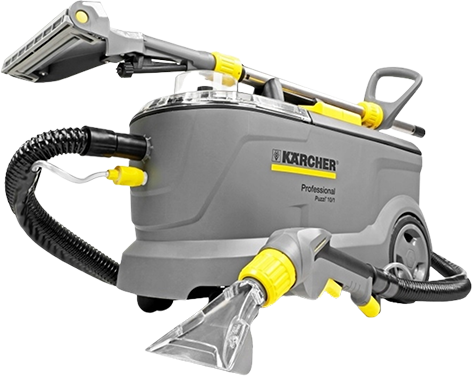

Accueil Location
À vous de jouer.
Vous louez le Kärcher Puzzi 10/1, vous tenez la machine, vous faites le passage. Elle arrive chez vous avec tout ce qu’il faut, et vous l’avez 24 heures à partir de la livraison. Si vous préférez qu’on s’en charge, c’est la prestation.
Deux forfaits,
un choix simple.
La machine, les accessoires essentiels et 24 heures à partir de la livraison. Choisissez la formule qui correspond à votre usage.
Standard
6 390 F- 2 pastilles RM 760
- Suceur sol et suceur fauteuil
- 24 heures à partir de la livraison
Auto-Home
7 990 F- 2 pastilles RM 760
- 1 brosse rotative et perceuse à batterie
- 1 bouteille de TASKI Tapi Extract
- 24 heures à partir de la livraison
Tout ce qu’il vous faut
pour nettoyer vous-même.
Le kit arrive prêt à l’emploi avec les accessoires nécessaires pour nettoyer vous-même vos textiles.

Le Kärcher et les accessoires indiqués sont fournis ensemble pour passer du nettoyage des sols au nettoyage des fauteuils et autres textiles.
Un seul geste,
du début à la fin.
La même séquence pour chaque textile : préparer, injecter, agir, extraire, laisser sécher, retrouver un textile propre.

Préparation
On dégage, on aspire le sec, on repère les zones marquées.
Injection
La solution part sous pression jusqu’au fond de la fibre.
Action
Elle décroche la salissure grasse au lieu de l’étaler.
Extraction
La turbine reprend l’eau et la saleté dans le même passage.
Séchage
Peu d’eau reste dans la fibre. Le temps dépend de la météo et de l’aération.
Textile propre
Le poil se relève, la couleur revient, l’odeur part avec l’eau.
L’injection extraction nettoie la fibre en profondeur, pas seulement sa surface. La méthode est expliquée avec la machine et son manuel.
La machine arrive
chez vous.
Sélectionnez votre zone lors de la réservation. Le tarif de livraison est calculé selon votre secteur.
- Papeete à MahinaGratuit
- Faaa – Papenoo1 500 F CFP
- Au-delà2 500 F CFP
Avant de choisir.
Les réponses essentielles avant de réserver votre location.
Le forfait Standard couvre l’usage courant avec les accessoires essentiels. Auto-Home ajoute une brosse rotative, une perceuse à batterie et une bouteille de TASKI Tapi Extract.
Oui. Les deux forfaits comprennent 2 pastilles RM 760. Le forfait Auto-Home comprend également une bouteille de TASKI Tapi Extract.
Il n’y a pas de durée fixe : cela dépend de la météo, de l’aération et de l’endroit où se trouve le textile. Au soleil et à l’air libre, le séchage est plus rapide ; dans une pièce fermée, il prend plus de temps.
Le Puzzi est adapté notamment aux tapis, moquettes, canapés, fauteuils, matelas et sièges de voiture, en tenant compte de la matière et des recommandations du fabricant.
Louer le Kärcher.
Choisissez votre forfait et votre date de livraison.